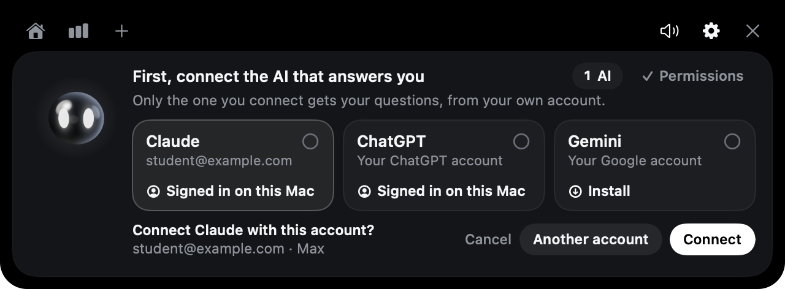
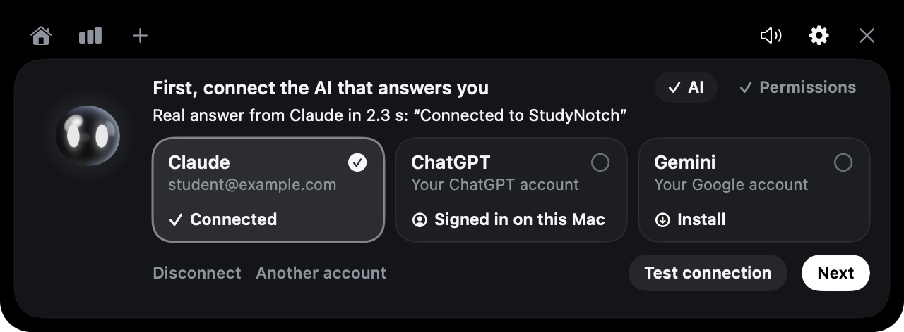

Connect an AI
StudyNotch has no server. It quietly runs the AI you already use, Claude, ChatGPT or Gemini, signed in with your own account, and takes only the answer. No chat window opens.
The first step is connecting one
On first launch the notch opens at step 1, “First, connect the AI that answers you”. Claude, ChatGPT and Gemini each have a tile that says what it needs. Click the one you want; the tile does the next thing.
Only the AI you connect gets your questions. Being signed in to the ChatGPT or Claude app on your Mac doesn’t connect it: StudyNotch asks first, and says which account the questions will go to.


| The tile says | Clicking it |
|---|---|
| Signed in on this Mac | Asks “Connect … with this account?” and shows the account’s email and plan. “Connect” uses it; “Another account” opens the sign-in page instead. Nothing is sent until you choose. |
| Connected | This is the one that answers, and the tile shows its account. “Disconnect” under the tiles stops it. |
| Sign in | Opens Claude’s or ChatGPT’s sign-in page in your browser (a Terminal window starts it). StudyNotch never sees your password. |
| Install | Gemini only: installs Google’s Antigravity CLI with Homebrew in a Terminal window, then starts its sign-in. |
| Get the Claude app / Get the ChatGPT app | Opens the download page. Install the app and sign in there. |
| Finish signing in | A window is waiting for you. The tile checks every few seconds and connects it as soon as you have signed in there. |
To change it later, press the gear in the notch, or use AI connection in the menu bar icon. If nothing can answer when StudyNotch starts (say, you signed out), it opens at step 1 again.
| Connection | Best for | Cost | Answer streams in |
|---|---|---|---|
| Claude app | People with a Claude subscription | Included in the subscription | Yes |
| ChatGPT app | People with a ChatGPT subscription | Included in the subscription | All at once, when done |
| Gemini | People with a Google account | Depends on your Google plan | Line by line |
| API key | People who would rather pay per use than subscribe | Pay for what you use | Yes |
Only one is connected at a time. If it stops working (say, you signed out), StudyNotch tells you and doesn’t switch to another AI on its own.
Using another account
The Claude app and the ChatGPT app may be signed in with an account you don’t want to study with. “Another account” opens the service’s own sign-in page, and you sign in with whichever account you like.
- That sign-in is kept only for StudyNotch, in
~/StudyNotch/.accounts. The Claude app and the ChatGPT app stay signed in exactly as they were. - The AI that is connected keeps answering until the new sign-in is done. Then StudyNotch switches to the new account.
- “Disconnect” signs that StudyNotch-only account out again.
- Gemini has one Google sign-in for the whole Mac. “Another account” opens
agyso you can type/logoutand sign in again.
Checking that it really works
Press “Test connection”. StudyNotch sends one real question to the connected AI, the same way your study questions go, and shows the answer and how long it took. If the AI can’t answer, the line says why.

Where your questions go, and where they don’t show up
- They go to the account on the tile, and count toward that plan’s usage, the same as using Claude or ChatGPT yourself.
- They travel through the service’s own tool (Claude Code for Claude, Codex for ChatGPT, Antigravity for Gemini), not through the chat window. So they do not appear in the chat list on claude.ai, chatgpt.com or in the desktop apps.
- The Projects you make in those chat windows can’t be filled from outside: neither Claude nor ChatGPT offers a way to add files to a chat Project except by hand. What these tools do have is a project that is a folder, and that is what a course becomes (below).
- StudyNotch asks the tool not to save the conversation. The only copy is in your own course folder’s log.
A course is the AI’s project
The folders and PDFs you give a course are not only searched by StudyNotch. They are handed to the connected AI as its project, so it can open them itself when the page that came with your question isn’t enough: a definition from three lectures ago, a due date in the syllabus, the next step of a proof.
- StudyNotch keeps a text copy of every PDF of the course, its own and the ones in linked folders, in the course’s
textfolder, with a mark before each page. The AI works in that folder and may also open the PDFs copied into the course. - It is read-only. Nothing in your folders is changed, and nothing is written into a linked folder.
- Only PDFs count. Other files in a linked folder are not copied and not handed over.
- An everyday question is still answered at once from the matching page. The AI opens files only when it needs to, and the question window then says “Reading your course files”. The answer ends with the file and page it used.
- With an API key there is no tool to open files, so only the matching page goes with the question.
| AI | What it may open | Tried for real |
|---|---|---|
| Claude | The course’s text and materials folders, and nothing else: a file outside them is refused. | Yes |
| ChatGPT | It is started in the course’s text folder and can’t change anything. Its read-only mode doesn’t fence it off from other files on the Mac. | Yes |
| Gemini | The same two folders are added to its workspace. | Not yet |
How Claude answers
The Claude app keeps the official Claude Code tool inside its own folder, signed in to the same account as the app. Each time you ask, StudyNotch runs that tool once in the background and shows only the answer in the question window.
- It never clicks the Claude app’s window or reads its screen. The app doesn’t even need to be open.
- The tool gets read-only access to the course’s
textandmaterialsfolders, and to a capture if there is one. Outside a course (General) it can’t read any file. - Running commands, editing files and web search are turned off. Conversations aren’t saved.
If you installed Claude Code on its own and signed in from the Terminal, without the Claude app, it uses that instead.
ChatGPT
The ChatGPT app keeps the Codex tool inside it, signed in to the same ChatGPT account. StudyNotch uses that one (or a Codex you installed yourself). If it isn’t signed in, pick ChatGPT under AI connection and sign in in the window that opens.
It runs read-only. The answer doesn’t stream in word by word; it appears all at once when it is done.
Gemini
Gemini answers through Google’s Antigravity CLI (agy). Google’s older gemini tool stopped answering personal Google accounts on 18 June 2026, so StudyNotch doesn’t use it.
- Click the Gemini tile. If your Mac has Homebrew, a Terminal window installs
agy; without Homebrew, the Antigravity CLI page opens instead. - The browser opens for Google Sign-In. When
agyshows its prompt in the Terminal window, you’re signed in; close the window.
The answer comes in line by line. Gemini answers haven’t been tested with a real account yet.
API key
- In step 1, press “Use an API key instead”.
- Paste an Anthropic API key and save.
Saving the key connects it. The key is stored only in your Mac’s Keychain. Save an empty field to delete it. The default model is claude-opus-5-5; change it with ai.model in config.json. Anthropic bills you for what you use.
What gets sent
- The selected text, or one capture
- Your course notes (
course.md) and the text of the matching page in your material - Any page of the course’s PDFs that the AI opens to answer
- The name and window title of the app you were reading in
- Your question, and the earlier questions and answers in the same window
Which sites you visited is never sent. Files in a linked folder that aren’t PDFs are never handed over.
Troubleshooting
| What you see | What to do |
|---|---|
| “No AI is connected yet” | Press “Choose AI”, click a tile and connect it. If you just installed or signed in, press “Check again”. |
| “… isn’t signed in anymore” | The AI you connected signed out. Click its tile to sign in again, or connect another one. |
| “… isn’t signed in” | Click its tile (gear in the notch, or AI connection in the menu bar icon); its sign-in opens in a Terminal window. |
| “StudyNotch can’t read the text you pick yet” | Turn on StudyNotch under System Settings › Privacy & Security › Accessibility, then pick the text again. |
| “The API key isn’t valid” | Enter the key again from the menu. |
| “Can’t connect” | Check your internet connection and press “Try again”. |